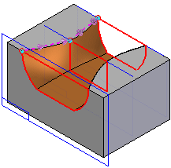

Lofted Cutout command
In ordered modeling:
Constructs a cutout by fitting through a series of cross sections. You can define the cross sections using profiles drawn within the command, sketches, or edges of existing features. The cross sections must be closed elements.
In synchronous modeling:
Constructs a cutout by fitting through a series of cross sections. You can define the cross sections using sketches, or edges of existing features. The cross sections must be closed elements.

You can also define guide curves to control the shape of the feature.
You can select wireframe elements from multiple Parasolid bodies or sketches and the elements will remain associative.